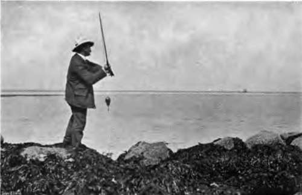
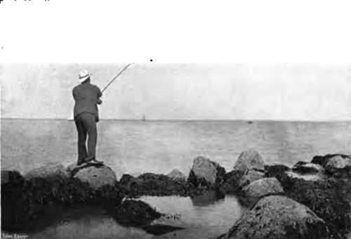

Chapter XXXII. Sea-Fishing From Fixed Positions: Fishing From Rocks
Description
This section is from the book "Fishing", by Horace G. Hutchinson. Also available from Amazon: Fishing.
Chapter XXXII. Sea-Fishing From Fixed Positions: Fishing From Rocks
The most extraordinary rock-fishing-we will for convenience take our " fixed positions " in this order : rocky shores, sandy shores, and piers-that I ever took part in was on the coast of Australia. I did not take a leading part, it is true, for a couple of experiences of those giddy clambers up goat tracks, with a cauldron of surf and perhaps a happy family of sharks in readiness a hundred feet below, held no attraction for a sporting taste singularly deficient in imagination. Born Australians run up and down these ledges in the cliffs with an indifference to danger that would do credit to a rock-rabbit; but I am neither a born Australian nor a rock-rabbit, and I stoutly declined to have any further traffic with such unholy recreation. There is a certain amount of rock-fishing, though in somewhat less dangerous circumstances, since the sharks at any rate are eliminated from the possibilities of disaster, on the east coast of Scotland in the neighbourhood of Aberdeen. Pollack and coal fish are taken in the coves and bays of the coast between Aberdeen and Stonehaven; and the fishermen use long rods and fine tackle, baiting their hooks with the inside of shore crabs or with large mussels.
83.- Throwing From The Rocks-back. P.T.O.
84.- -Throwisg From The Rocks-forward.
Fishing from the rocks is in wide vogue throughout the Mediterranean, and those who have in great steamers called at the different ports, at Gibraltar, at Marseilles, at Leghorn, at Naples, at Palermo, must have noticed at almost all of these immense bamboo rods projecting from favourite fishing spots on the rocks. Biarritz is another famous place for the use of these long rods from the rocks, though they will more often be seen in clusters on the jetties on either side of the Port aux Pecheurs. Wherever the face of the rock slopes outwards, a long rod, one of fifteen or twenty feet, is clearly essential to haul the fish clear of the rock itself. Where, on the other hand, as rarely happens, the rock falls sheer into deep water, like the side of a wall, then a short rod or even a hand-line would meet the requirements of the situation.
Float tackle is par excellence the most killing manner of fishing from the rocks, or for the matter of that from piers and harbours, particularly in cases where the bottom is also rocky and therefore likely to get foul of leads. Those who are already familiar with the principles of float-fishing in lake or river need only be told that an extra strong set of tackle is wanted in salt water, and the float, though made as sensitive as possible by accurate shotting of the line beneath it, must not dance and bob to every little ripple on the surface of the sea. A good thick pike-float answers the purpose admirably, and some arrangement whereby it can easily be shifted up or down the line is essential, as in some places the depth alters very rapidly, and it is necessary to fish with great accuracy at a certain distance from the bottom. Although, as already suggested, the sensitiveness of the float adds considerably to the angler's enjoyment, it must be admitted that the three fish chiefly caught by this means alongside rocks-bass, pollack, and mackerel-do not, as a rule, take the bait with the half-hearted appetite of wary carp. With them, on the contrary, it is all or nothing; a quick rush, and the float disappears in a swirl of water, and the line tightens with a twang. In fishing for grey mullet, on the other hand, which will be described on a later page in connection with pier-fishing, the biting may on occasion be so delicate that a light quill float, such as that used for Thames roach, may give the best results and the fewest misses.
As some of the best fishing close to a rocky shore is to be had in the twilight, after the sun is down in the west, it is a good plan to paint the top of the float with a dash of French white, or else to stick a very small white feather in the cap by which the float is made fast to the line. The eye soon accustoms itself to the small white spot, and by this means it is enabled to follow without difficulty the slightest movement on the part of the float long after the failing light would, without some such precaution, have rendered this impossible to the ordinary eyesight. Where the water runs to a considerable depth-i.e. eight or ten fathoms-close up to the rocks, a somewhat exceptional condition, and where the fish are feeding not far from the bottom, float tackle is not always effective. The great length of line intervening between the float and the hook hampers the movements of the former, and the biting of the fish is not always communicated to the float and thence to the angler's eye with sufficient promptness to give time for the necessary stroke to drive the hook home.
In such a case the paternoster may prove the more useful piece of tackle, and it is well to remember that the paternoster may be made up with any degree of either strength or fineness, from the delicate single-gut contrivance, with its little green pear of lead, used by perch fishers on Thames locks, to the stout treble-gut arrangements with their bars of brass, or whalebone, or cane, sold for sea-fishing in deep water and among big fish. A compromise between these two will, as a rule, be found the best tackle in ordinary fishing from the rocks. The water is not, as a rule, very deep; it is often very clear; and the fish caught seldom weigh much over 3 or 4 lbs., save when an exceptionally large pollack or bass, or maybe a conger eel, that has lost its way home, moves off with the bait with that slow but sure progress so certainly indicative of a heavy fish at the business end of the line. When conger fishing at night, by the way, stout tackle may be used anywhere from the rocks, as one is always liable to hook an immense fish even close to the shore. A paternoster of strong single gut should be sufficiently strong for ordinary bass or pollack fishing from the rocks, and it is as well to attach the lead by a frayed loop of line. When, as may sometimes happen, the lead catches fast in the rocks on the bottom, it may be sacrificed, and the entire line, hooks and all, recovered, after which the addition of a spare lead enables the angler to resume fishing with very little loss of either time or tackle. Only practice will tell the angler just when he should strike when using a paternoster. There is no telltale float to guide him in choosing the right moment. As a general rule-one, however, to which actual practice furnishes many exceptions-the first 44 niggling " bite of the fish should be the signal for him to lower the top of his rod ever so slightly, and if, as should happen, the fish is encouraged by this concession to take the bait in earnest, he may then strike as if he meant it and reel in. The object of the paternoster being to offer the baits at different depths, it is a good plan, unless the angler is quite certain of the right bait for that locality, or unless, as may be the case, he has only one kind of bait at his disposal, to use two or even three baits, one on each hook, until he is able to form some opinion as to which the fish are taking at the time in preference to the rest. There is no rule, but, speaking roughly, if fishing from a headland for bass, one might bait the top hook with a living sand-eel, hooked through the upper lip, the middle hook with a strip of squid, and the bottom hook of all with either a lump of ray's liver, a piece of fresh herring, a green crab, or a couple of mussels. If none of these, each in its way being a most killing bait for bass, produced any result after a reasonable trial, it might then not unfairly be assumed that the bass had migrated elsewhere. Although the specific object of the paternoster is undoubtedly to search different depths, it may also, when used from the shore, be used in trying different spots in the horizontal plane, and this is done by casting it carefully out and using it at an obtuse angle with the rod instead of letting it hang vertically. By gradually reeling in line, provided due care be taken not to get the lead foul of a rocky bottom, it is surprising how much water may be searched in this way. When the same, or different, fish are, as sometimes happens, feeding well at different depths, but rather too near the surface for the ordinary paternoster (in which the lead is not more than a foot at most from the lowermost hook) to be of use, a killing combination may be made of paternoster and float tackle by simply removing the heavier lead and substituting a small bullet, just sufficient to "cock" the float. Needless to say, this, or any other form of float tackle, is useful only in calm weather, as any considerable disturbance of the water is fatal to the sensitive working of the float.
Continue to:
- prev: Chapter XXXI. Section II. Sea-Fishing From Fixed Positions
- Table of Contents
- next: Sea-Fishing From Fixed Positions: Fishing From Rocks. Part 2